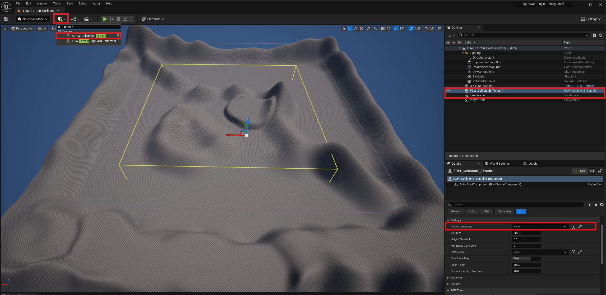
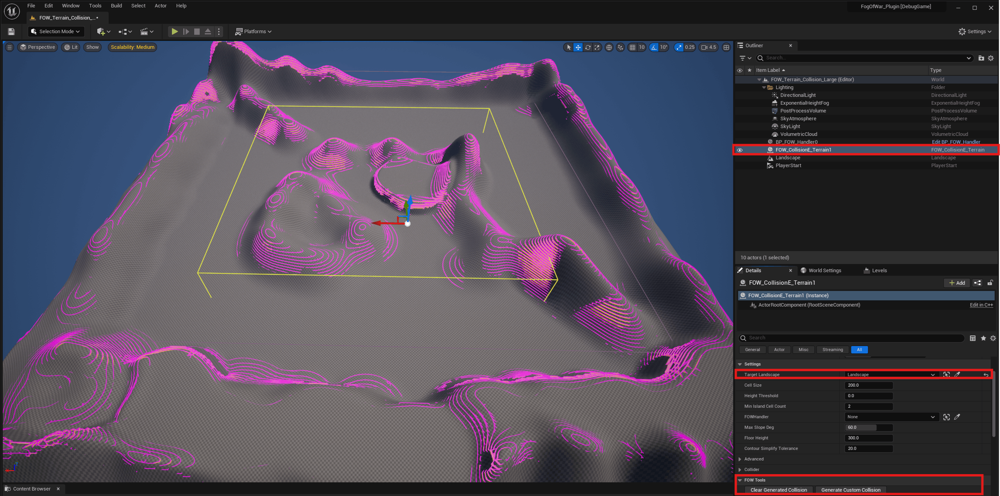
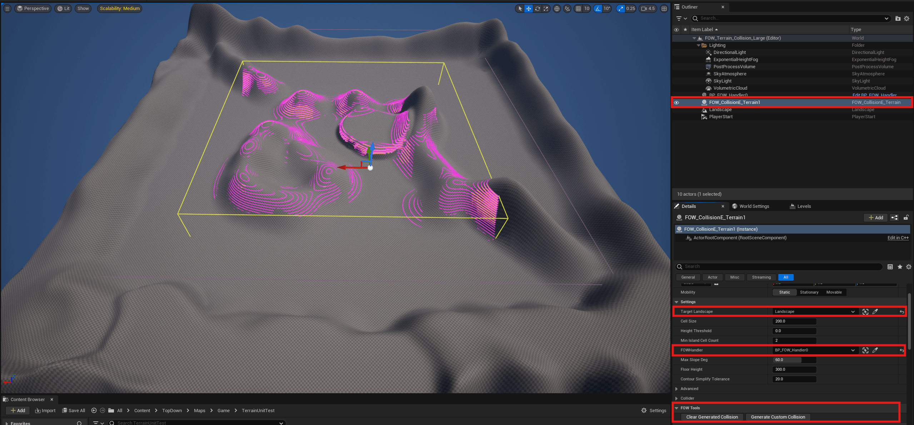

Collision Terrain Entity
Real-world terrains are rarely flat, and hand-placing CollisionEntity geometry under a Landscape to block
sight correctly quickly becomes tedious. AFOW_CollisionE_Terrain is an editor tool that samples a
Landscape's heightfield and fills the volume under the terrain for you, wherever it rises above a height
threshold, spawning UFOW_CollisionE_CustomComponent geometry that follows the terrain's actual silhouette.
It's a one-shot generator (CallInEditor buttons), not a runtime component: you bake the collision once in
editor, and it ships as regular FOW_CollisionE_CustomComponent children.
Generate the Collision
The tool voxelizes the terrain into horizontal Z-slices ("floors") of Floor Height thickness, stacked from the
landscape's lowest point upward. For each floor, the filled footprint is extracted as a simplified polygon
(marching squares, then Douglas-Peucker simplification) and spawned as a UFOW_CollisionE_CustomComponent - so
a diagonal cliff edge stays diagonal instead of turning into a staircase of square cells.
- Drop a
AFOW_CollisionE_Terrainactor into your level. - Assign
Target Landscape.

You can now generate the terrain
- Click
Generate Custom Collision. - Click
Clear Generated Collisionto remove everything it spawned and start over.

Limiting Generation to the FOWHandler
On maps where the landscape extends well past the playable/fogged area, most of the generated collision has
nothing to shadow: floors are what fog is computed against, so collision generated outside every FOW floor is
wasted work and wasted Collision Entities. Linking FOWHandler to a AFOW_Handler in the level lets the
generator skip that work automatically:
- Any chunk whose XY footprint doesn't overlap any of the Handler's FOW floor AABBs is skipped entirely - no height sampling at all for that chunk.
- Within a chunk that is kept, a floor-band whose Z range doesn't overlap any floor there is skipped too.
Left unset (the default), generation covers the whole landscape as before - FOWHandler is purely an
optimization, not a requirement.

Settings
Target Landscape: theLandscapeto sample.Cell Size: sampling grid resolution (cm), also the marching-squares resolution. Smaller = more precise contour, more raw vertices before simplification.Height Threshold: world-Z above which the terrain is considered "ground" to fill under.Min Island Cell Count: contours whose bounding box spans fewer cells than this on both axes are discarded as noise.FOWHandler: optional, see Limiting Generation to the FOWHandler.Max Slope Deg: cells climbing/dropping faster than this towards a neighbour are excluded from every floor's contour. Cliffs are thin in XY but tall in Z, so excluding them is the single biggest collision-count saving available.Floor Height: thickness of each Z-slice used to voxelize the fill. Smaller hugs the terrain tighter, at the cost of more floors/collision pieces.Contour Simplify Tolerance: Douglas-Peucker tolerance (cm) applied to each extracted contour. Higher = fewer vertices, less faithful to the sampled terrain edge.Max Floor Count(Advanced): safety cap on how many floors are stacked per chunk, in caseFloor Heightis too fine for the chunk's height range.Chunk Size(Advanced): world-space size (cm) of the square chunks the landscape is processed in. See Generate the Collision.Should Be Drawn(Collider): forwarded to every spawned component'sShouldBeDrawn. Off by default - generated collision is meant to shadow fog, not to be seen.
Display FOW Collision
Every collider (Box, Custom, or terrain-generated) can show an editor-only wireframe of the volume it actually
blocks - useful to check placement without guessing from the component's regular gizmo. Toggle it from the
viewport's Show menu, under Fog Of War Colliders. The same flag also shows Stealth Area colliders.
This is purely an editor visualization: it's stripped from cooked/packaged builds and costs nothing at runtime.
Each collider exposes Volume Color, Split Color, and Line Thickness if you want to override the default
magenta/orange look for specific colliders.
Documentation built with Unreal-Doc v1.0.9 tool by PsichiX